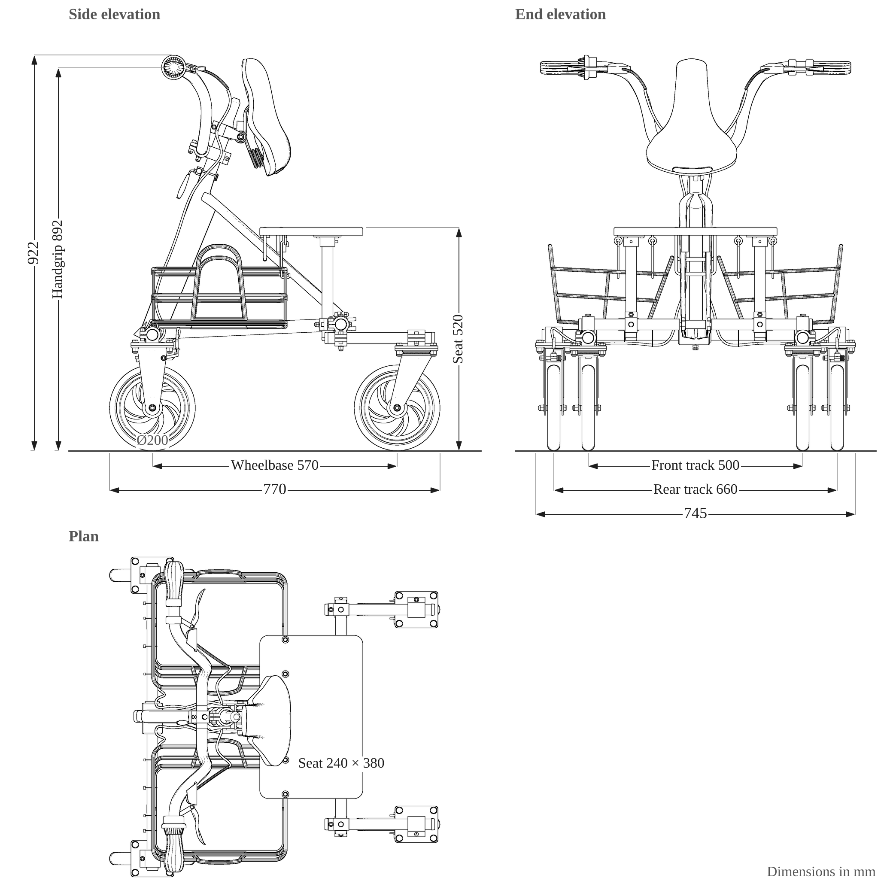
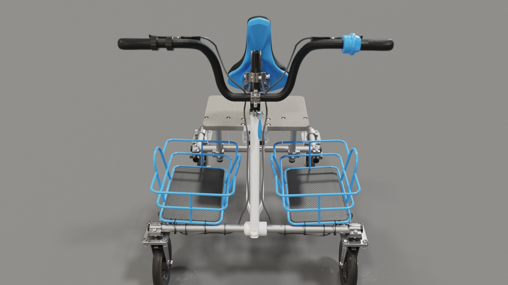

The walker is 770 mm long and 745 mm wide, with a 520 mm seat and handgrips at 892 mm.

Seat at 520 mm, handgrips set by the seat post.
The handlebar clamps to the original seat post, so grip height is set the way a bike saddle is: loosen the quick release, slide, close. The modelled position puts the grips at 892 mm.
Rear track 660 mm, front track 500 mm, wheelbase 570 mm.
The rear casters sit just outside the handgrips, so leaning on one grip cannot tip the walker sideways. The narrower front lets the walker pass a standard door.
21.1 kg empty, of which 7.7 kg is the reused bike.
Four bought-in Ø200 mm PU casters account for about 6 kg; the steel tubes, plywood and clamps for the rest.
